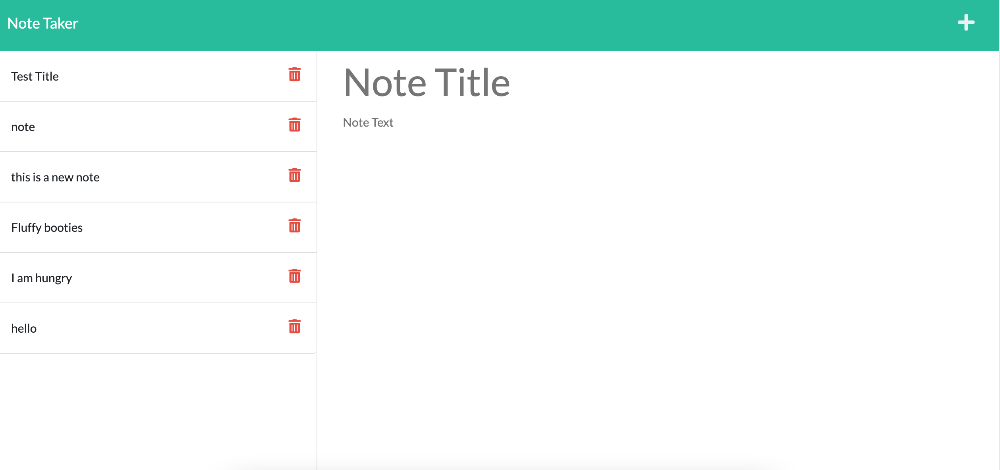
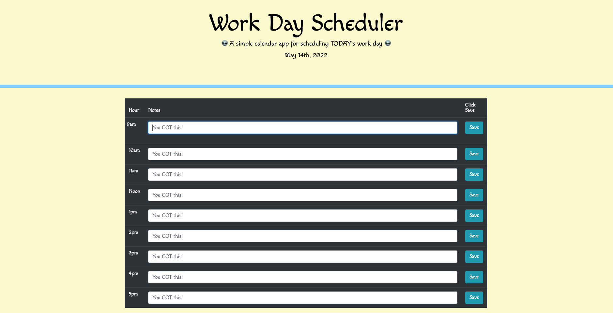
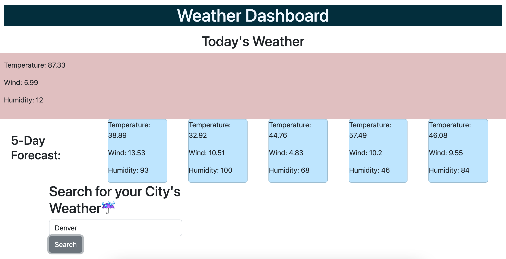

Little Bit About Kris

I am a Full Stack Web Developer, certification from the University of Denver Coding Bootcamp. I have a Bachelors of Science from the University of Colorado-Boulder. Confident in MERN stack, SERN stack, & JavaScript. My passion lies in back end development but I can nail any part of the program necessary front or back! I love my pets, nature, and coding.
Click below for my work

DU Event Listeners
- Summary: As our coding bootcamp came to an end, we wanted a way for students to continue connecting. After login, app
allows its users to interact with resources, events, a forum, and a live chat feature.
- Tools: CSS, React, socket.io, MongoDB, GraphQL, Bootstrap, bcrypt, Express, JavaScript

SERN stack app

Refactoring RESTful API to GraphQL
Express backend
Bootstrap & JQuery
OpenWeatherMap RESTful API

SEO